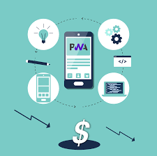

Progressive Web Apps (PWAs)
What Are PWAs?
Progressive Web Apps are web applications that use modern browser features—like service workers and manifests—to provide offline support, fast loading, and an installable, app-like experience directly from the browser.
Key Benefits
- Offline Functionality: Service workers cache assets to keep apps running without network connectivity.
- Installable: Users can add PWAs to their home screen, complete with a custom splash screen.
- Seamless Updates: New features and fixes are delivered via the web without app store approvals.
Getting Started
To create your first PWA, add a Web App Manifest (`manifest.json`), register a service worker script, and serve your site over HTTPS. Test and audit your PWA using tools like Lighthouse to ensure installability and offline readiness.